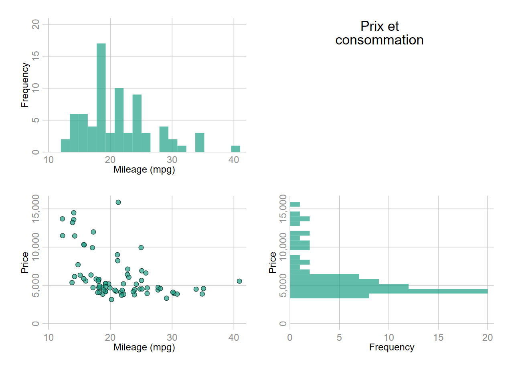

sysuse lifeexp
#delimit ;
tw scatter lexp gnppc,
by(region, total note(" "))
mc("31 161 135%70") mlc(black) mlw(*.6)
xlabel(1000 "1k" 5000 "5k" 10000 "10k" 15000 "15k" 20000 "20k" , alt)
xscale(log)
;Combiner des graphiques
1 Small multiple automatiques
Les facettes ou small multiple permet de combiner rapidement plusieurs graphiques répétés pour différentes valeurs d’une variable additionnelle, généralement catégorielle. Stata est plutôt efficace pour produire ce genre de visualisation avec l’option by() dans la commande graphique. On peut néanmoins regretter le manque de possibilité concernant l’habillage des sous graphiques avec, par exemple, une même couleur imposée à l’ensemble des sous graphiques.
Syntaxe : graphique, by(variable [, total col(#) row(#)…])…
Avec l’argument total en option de by(), on peut ajouter un graphique additionnel représentant le graphique avec toutes les valeurs, donc celui sans l’option by. On peut également modifier la répartition des sous-graphiques par ligne et colonne avec row() et col(). Le graphique génère automatiquement une note « Graphs by nom_variable » plutôt dispensable. Si l’on souhaite supprimer cette note, on ajoute note(" ") en option de by().
Exemple
2 Combinaison libre
Deux commandes sont disponibles pour combiner plusieurs sous-graphique:
graph combine: commande officielle.grc1leg: commande externe qui permet d’afficher une seule légende lorsque les sous graphiques partagent la même légende. Installation :ssc install grc1leg.
2.1 Conseils et options pour les sous-graphiques
Les sous-graphiques devant être enregistrés, préférer
name(nom, replace)àsave(path/nom, replace).Une fois les sous-graphiques validés, utiliser l’option
nodrawpour raccourcir le temps d’exécution.margin(#1 #2 #3 #4): si l’on souhaite modifier l’espace entre les sous graphiques on peut utiliser cette sous-option de l’optiongraphr(). Par défautmargin(0 0 0 0)avecmargin(left right top bottom). L’application en fin de section précisera par l’exemple l’intérêt de cette option. Voir égalementimargin()plus bas pour appliquer automatiquement une modification identique à tous les sous graphiques.Lorsqu’un graphique sera combiné à un autre, les options
xsize()etysize()sont sans effet. On peut alors utiliser les optionsfxsize()etfysize(). De même, l’optionscale(#)est sans effet et sera remplacée par l’optioniscale()du graphique combiné.Générer un graphique vide: en particulier lorsque le nombre de sous-graphiques est impair, on peut générer un ou plusieurs graphiques vides pour ajouter un titre, une note…., ou affiner la mise en page. La syntaxe de ce graphique est donnée ci-dessous, ainsi qu’un moyen de récupérer facilement sa syntaxe via une macro enregistrée en dur.
Graphique vide
Syntaxe
tw scatteri 1 1, ylab(,nogrid) xlab(,nogrid) mc(%0) xtitle("") ytitle("") yscale(off noline) xscale(off noline) name(gv,replace) Pour récupérer cette syntaxe on peut l’enregistrer dans une macro en dur, de type global. On peut soit exécuter directement ce graphique vide, soit le modifier pour ajouter, par exemple, un élément de type texte, ou modifier son habillage comme la couleur de fond.
Enregistrement dans une macro
global gvide "scatteri 1 1, ylab(,nogrid) xlab(,nogrid) mc(%0) xtitle("") ytitle("") yscale(off noline) xscale(off noline) name(gv,replace)"Exécution directe du graphique vide sans affichage (ajout de nodraw)
tw $gvide nodrawRécupération de la syntaxe et ajout d’un texte libre et modifier l’habillage
mac list gvide
tw $gvide text(1 1 "MON TEXTE", color(white)) ///
graphr(color(gs8)) plotr(color(gs8))2.2 Syntaxe et options
Syntaxe générique
graph combine liste_sousgraph [, col() row() xsize() ysize() iscale() xcommon
ycommon …..]grc1leg graph combine liste_sousgraph [, legendfrom(nom_graph) col() row() xsize() ysize() iscale() xcommon ycommon…..]
Options du graphique combiné
col(#)etrow(#)permettent d’indiquer le nombre de colonnes et de lignes pour la mise en page.xsize(#)etysize(#)permettent de contrôler les effets d’écrasement si le nombre de colonnes et de ligne n’est pas identique. max(#)=15.iscale(#)permet de réduire les éléments types texte et symbole pour l’ensemble des sous graphique (remplacescale()pour un graphique individuel).imargin(#1 #2 #3 #4)modifie pour chaque sous graphique la distance en la limite de la zône du graph (graphr) et le bord du graphique. Dans l’ordreimargin(left right top bottom). Par défautimargin(0 0 0 0), des valeurs positives augmentent la distance, des valeurs négatives la réduise.xcommonetycommonforcent les graphiques à partager les même valeurs pour les axes.legendfrom(nom_graph): pour la commandegrc1legseulement, permet d’afficher une seule légende lorsque les sous-graphiques partage la même.
Application
L’idée est de proposer un graphique devenu assez standard en visualisation, représentant pour deux variables continues leur distribution croisée, ici sous forme d’un nuage, et leur distribution marginale, ici sous forme d’histogramme. Ce type de graphique est également souvent représenté dans une version combinant des courbes de niveaux et des densités simples.
On prendra ici de nouveau les variables price et mpg de la base auto.
Dans un premier temps on combinera simplement les 3 graphiques, dans un second temps on ajoutera un graphique vide avec un élément titre à la seconde colonne de la première ligne, enfin on proposera un graphique définitif avec deux variantes, qui modifie la position du titre.
Au niveau des options je n’ai pas reporté les altérations du style par défaut pour alléger le report de la syntaxe.
Graphique combiné simple
sysuse auto
#delimit ;
histogram price, bin(20) freq
fc("31 161 135%70") lc(%0) mlw(*6)
name(g1,replace)
;
histogram mpg, bin(20) freq
fc("31 161 135%70") lc(%0)
name(g2,replace)
;
tw scatter price mpg,
mc("31 161 135%70") mlc(black) mlw(*.6)
jitter(1)
name(g3,replace)
;
graph combine g1 g2 g3, title("Prix et consommation")
;On ajoute un graphique vide dans lequel on indiquera le titre du graphique, et on positionne l’histogramme de la variable price à l’horizontal (option horizontal) :
tw $gvide title("Prix et" "consommation")
#delimit ;
histogram price, bin(20) freq
fc("31 161 135%70") lc(%0) mlw(*6)
horizontal
name(g1,replace)
;
histogram mpg, bin(20) freq
fc("31 161 135%70") lc(%0)
name(g2,replace)
;
tw scatter price mpg,
mc("31 161 135%70") mlc(black) mlw(*.6)
jitter(1)
name(g3,replace)
;
graph combine g2 gv g3 g1 ;
Pour la version suivante, on va réduire la taille des abscisses pour g1 (price) et le graphique vide, la taille des ordonnées pour g2 (mpg) et le graphique vide avec fxsize(#) et fysize(#). On va également cacher plusieurs titres et labels d’axes et réduire les distances d’espacement entre les sous graphiques avec l’option imargin(#1 #2 #3 #4) de graph combine. La distance d’espacement avec le bord du graphique combiné sera par contre augmentée pour compenser. Titres et labels d’axes seront cachés et non pas supprimés. Si on les enlève, on modifie le ratio d’affichage du graphique et les axes reportés ne seront pas correctement ajustés entre le nuage et les histogrammes. Visuellement cela augmente la distance de séparation entre les graphiques, d’où sa réduction avec imargin().
Modification des tailles des sous graphiques:
- histogramme de price (g1):
fxsize(50) fysize(100) - histogramme de mpg (g2):
fxsize(100) fysize(50) - graphique vide (gv):
fxsize(50) fysize(50)
Titres et labels des axes cachés:
- titre:
title(, color(0%) - label:
xlabel(,labc(%0)) ylabel(,labc(%0))
Modification des distances avec les bords: Pour les sous graphiques, comme on applique la même modification, on utilise l’option imargin(-5 -5 -5 -5) de graph combine. C’est équivalent à utiliser pour chaque sous graphique graphr(margin(-5 -5 -5 -5). Pour que la distance entre les bords extérieurs des sous-graphiques ne soient pas trop proche de la limite du graphique combiné, on augmente la distance avec graphr(margin(5 5 5 5)) appliqué en option de graph combine.
#delimit ;
histogram price, bin(20) freq
fc("31 161 135%70") lc(%0) mlw(*6)
horizontal
xtitle(, color(%0))
ytitle(, color(%0))
xlabel(,glw(*.2))
ylabel(, labc(%0) glw(*.3))
fxsize(50) fysize(100)
name(g1,replace)
;
histogram mpg, bin(20) freq
fc("31 161 135%70") lc(%0)
xtitle(,color(%0))
ytitle(,color(%0))
ylabel(, glw(*.2))
xlabel(, labc(%0) glw(*.3))
fxsize(100) fysize(50)
name(g2,replace)
;
tw scatter price mpg,
mc("31 161 135%70") mlc(black) mlw(*.6) jitter(1)
fxsize(100) fysize(100)
name(g3,replace)
;
graph combine g2 gv g3 g1,
xsize(20) ysize(20) col(2) imargin(-5 -5 -5 -5) graphr(margin(5 5 5 5))
;Le positionnement du titre, à droite, n’apparait pas optimal. En inversant le sens de l’axe x pour l’histogramme de price, en cachant le titre de l’axe de price pour le nuage, et en combinant différemment les graphiques, on obtient un meilleur résultat.
-Inversion de l’axe x pour l’histogramme de price : xscale(reverse) -Cache du titre de l’axe price pour le nuage : ylabel(, labc(%0)) -Modification de l’ordre des sous-graphique : graph combine gv g2 g1 g3